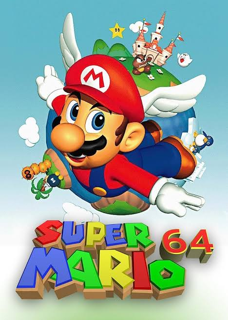

Welcome to the Mario Fan Site!
Here you'll find information about everyone's favorite plumber-turned-hero, Mario! Most of the information here are just the basics of the Mario franchise. A beginner's introduction if you will. But let's be honest, who still doesn't know Mario nowadays?
About Mario
Mario is a fictional character created by Japanese video game designer Shigeru Miyamoto. He is the main character and mascot of Nintendo's Mario franchise.
Some key facts about Mario:
- First appeared in the arcade game Donkey Kong in 1981
- He's known for his red cap, blue overalls, and mustache.
- He is a love interest for Princess Peach.
- Has a brother named Luigi (who is often overshadowed by Mario).
- Stars in various game genres not limited to platformers!